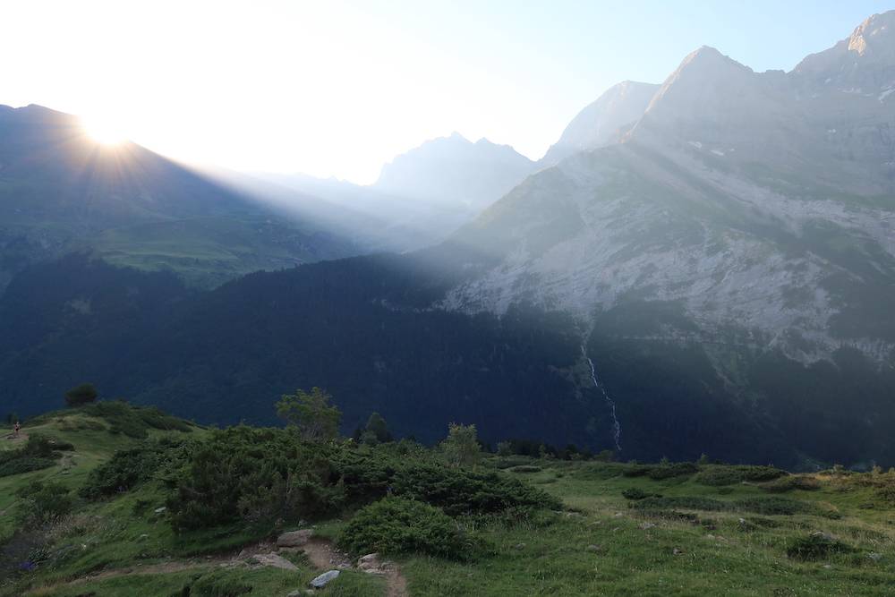
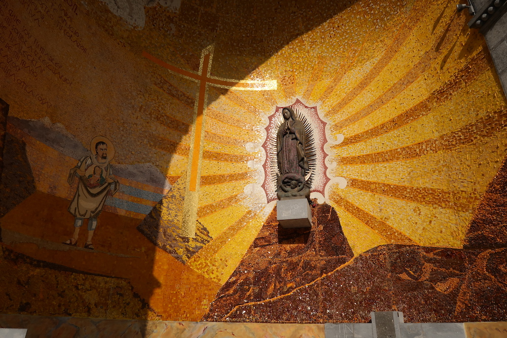
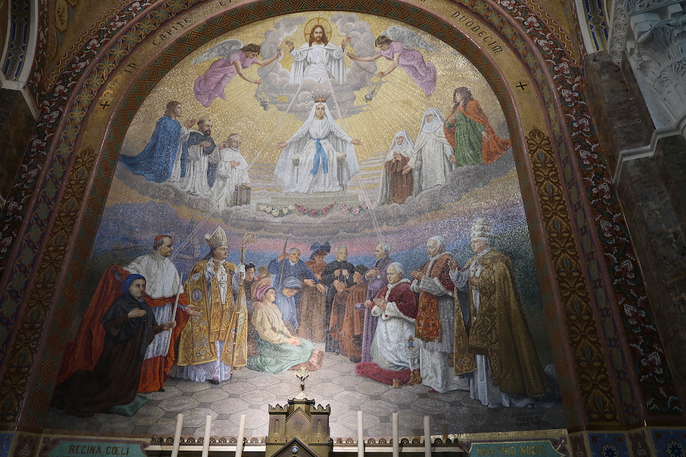
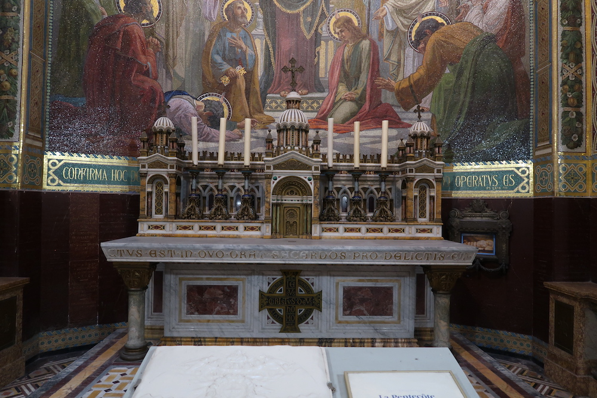
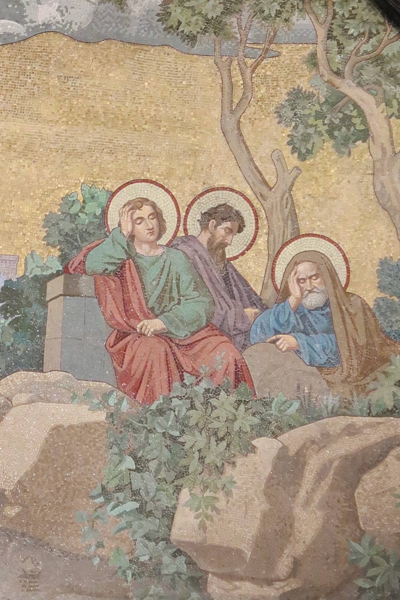
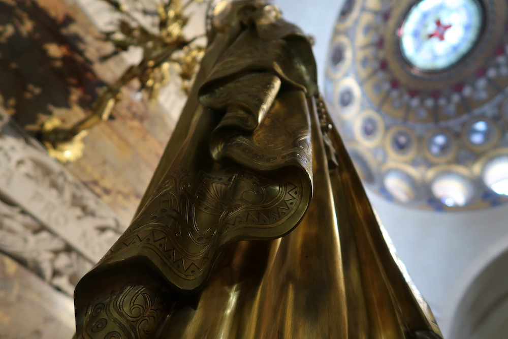
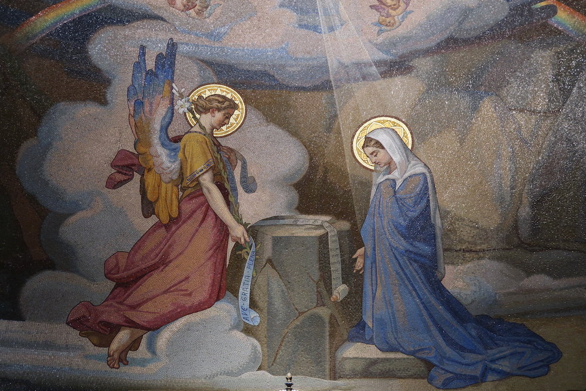

Vacances à Gavarnie en juillet 2022
Petit bilan de notre semaine passée à Gavarnie, du 11 au 18 juillet 2022, en pleine canicule.
Le camping
Nous avons planté la tente au camping La Bergerie, au pied du cirque de Gavarnie. C’était le seul avantage de ce camping qui n’est pas optimal du tout (emplacements montés les uns sur les autres, pratiquement pas d’ombre, ni de tables de pique-nique, sanitaires sales et pas assez nombreux, robinets inadaptés qui font gaspiller l’eau, etc).
Nous n’avions plus trop l’habitude de camper, aussi les nuits m’ont paru difficiles ; surtout les premières. Nous avons même dû changer de tente en cours de route, car la première installée était toute humide de condensation au matin. Heureusement qu’on avait emporté les deux !
Tous les jours, nous entendions passer les chevaux et les ânes qui se rendaient au village.
Nous avons aussi passé de longs moments de repos au camping. Au départ, nous ne savions pas trop comment nous occuper. Nous avons fini par jouer à Mogogo, à la bataille navale, nous avons lu, nous nous sommes ammusés à écrire une courte histoire à deux et nous nous sommes cassés les dents sur des mots croisés, des mots mélangés, des sudoku et autres joyeuseries (bouquin de jeux trouvé à la boutique). Il nous est apparu qu’il est très important de prendre de quoi nous divertir pendant les vacances. On ne peut pas toujours être en train de crapahuter !
Les balades
Nous sommes partis dans les Hautes Pyrénnées pour nous faire plaisir en nous promenant en pleine nature.
La première randonnée était plannifiée : passer sur le plateau de Bellevue pour rejoindre la brèche de Rolland, puis redescendre dans le Cirque de Gavarnie par les prés. Bon… Nous nous sommes plantés quelque part et au lieu de passer 8 heures à crapahuter, nous sommes restés presque 12 heures dans les montagnes ! J’avais mal aux jambes, nous nous sommes perdus et nous avons dû prendre des chemins périlleux (nous avons fait de l’escalade !), mais c’était super. Nous avons vu 14 marmottes, une horde d’isards (sorte de chamoix roux en été), des vautours fauves, certainement un aigle qui s’apprêtait à attraper une grosse marmotte, de magnifiques fleurs, des moutons, des vaches, des chevaux. Toute la famille hihi.

Les jours suivants, nous avons alterné petites balades tranquilles, visite du village et autres randonnées plus intensives. Nous avons abandonné l’idée de suivre les balisages ou les fiches que nous avions préparées. Rien n’est indiqué correctement dans ces montagnes. Il faut clairement une carte IGN, que nous n’avions pas. Nous sommes allés partout où nous pouvions, au pied des cascades, dans les plaines, dans les bois. C’était top.
Ma journée préférée fut celle où nous retournâmes sur le Plateau de Bellevue, que nous avons renommé la Colline aux Marmottes. Ce jour-là, nous en avons vu 18. Nous sommes restés tranquillement assis à regarder les animaux, les parapentes et les cours d’eau, à pique-niquer et à écouter la nature. C’était agréable.
Les repas
Nous avions plus ou moins prévu de quoi pique-niquer pendant les balades et au camping. J’avais juste oublié les allumettes pour le réchaud. Heureusement qu’il y avait une épicerie dans le village.
Nous avons aussi dégusté de superbes omelettes au fromage et aux cèpes, avec pain perdu et glace myrtilles, dans un petit restaurant bien sympathique (Bar Restaurant Claire Montagne) avec une ambiance chalet de montagne (la seule de tous les établissements du village !).
Nous avons mangé une pizza chez Pizzayo’lo dont je me suis jurée de la refaire à la maison. Voici la recette :
Garnir la pâte avec de la crème aux oignons, des pommes de terre en dés, persillées, du jambon de pays, du fromage de brebis et des olives (qui manquaient sur notre plat, mais bon, elle était bonne quand-même).
Nous avons aussi goûté des glaces artisanales au lait entier de vache. Première tentative :
- noisette, Bueno pour moi,
- vanille, nougat pour Nuk.
Deuxième essai :
- framboise, Stracciatella pour moi,
- banane, Nutella pour Nuk.
Un délice.
Par contre, tout était extrêmement cher. C’était vraiment abusé. De l’arnaque même. On voulait se faire plaisir avec des confiseries. Nous n’avons même pas pu nous y résoudre. Du gâteau à la broche (spécialité du coin, à ce qu’on dit) à près de 56 euros le kilo. C’est de la pâte à crêpe ! Ils nous l’ont dit eux-mêmes… Idem pour les pains de nougat… À l’épicerie les prix étaient exorbitants aussi. Nous avons quand-même pris des saucissons de montagne. C’est ce qui nous paraissait le plus raisonnable. Et ils sont délicieux. Nous avons aussi goûté un fromage aux laits de vache et brebis. Il était très bon, mais onéreux.
Lourdes
Sur le chemin du retour, nous avons fait une petite pause à Lourdes pour voir le Sanctuaire des miracles. Il y avait du monde, mais ça allait encore, vu qu’il était tôt. La visite a été rapide. Il n’y avait pas grand chose à voir en fin de compte. Nous sommes bien contents d’y être allés parce qu’il y a de belles pièces artistiques. L’architecture des bâtiments n’est pas exceptionnelle. Les gens sont illuminés. C’est à la fois étonnant et triste à voir.
     Conclusion
Globalement, ces vacances étaient extra. On a vécu dehors tout du long, à la dure. On a profité des paysages et de nos amis les animaux et on s’est fait des bons repas. La canicule, ce n’était pas facile. L’eau était fraîche et pure, contrairement à l’air. On peut dire que le village et tout ce qui le compose sont une énorme supercherie / attrape touristes, et ça fonctionne. C’est dommage. On aimerait que tout soit tellement cool qu’on ait envie d’y revenir.
Autre point important, il faut penser à s’équiper convenablement et prévoir plusieurs points d’étapes.
Concrètement, emmener des épingles à linge, une table et des chaises, les couverts adéquats (petite cuillère pour manger le melon), un savon en plus du gel douche, un ouvre-boîte, les allumettes, etc. Et il est préférable de prévoir deux ou trois jours dans un camping pour visiter un endroit, puis de se déplacer dans un autre camping, etc. Enfin, tout le matériel de couchage est à revoir (une bonne tente, des matelas, des oreillers, etc). Pour finir, il faut absolument rouler en soirée et en nuit, surtout l’été.